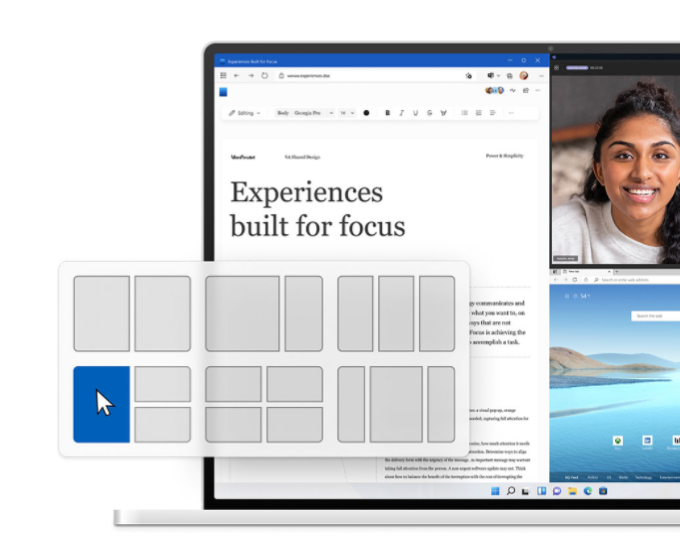
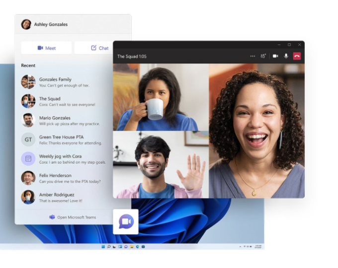
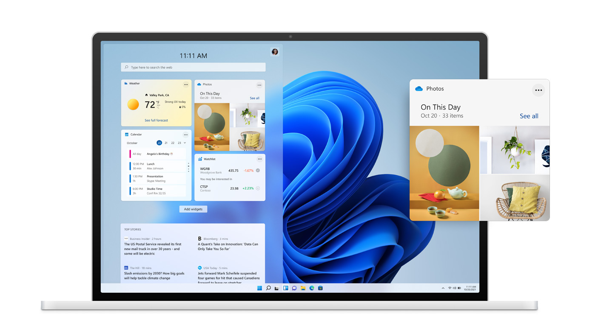
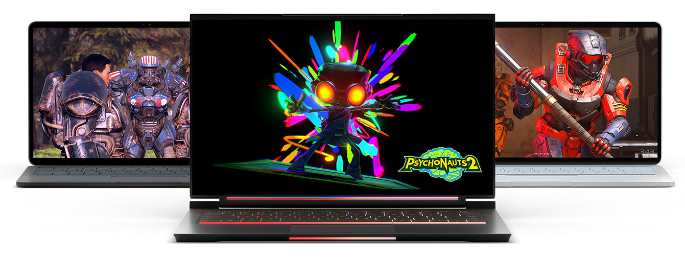
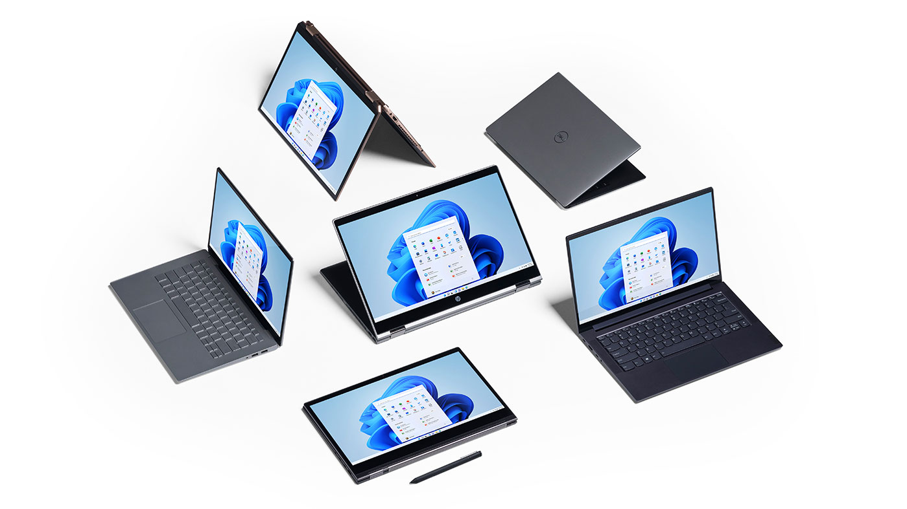

Obtenha uma perspectiva nova
O Windows 11 oferece um espaço calmo e criativo onde você pode perseguir suas paixões por meio de uma experiência nova. De um menu Iniciar renovado a novas maneiras de se conectar com pessoas, notícias, jogos e conteúdos favoritos, o Windows 11 é o lugar para pensar, expressar e criar de maneira natural
Maximize a sua produtividadeAcesse todos os aplicativos que você precisa e multitarefa com facilidade com ferramentas como layouts Snap, desktops e uma nova experiência de reconexão mais intuitiva. |
 |
|  |
Novas formas de conectarConecte-se instantaneamente com as pessoas de quem você gosta direto na área de trabalho com o Microsoft Teams. Ligue ou converse gratuitamente, não importa o dispositivo em que estejam. |
Seu conteúdo, escolhido por você
Com o Microsoft Edge2 e uma infinidade de Widgets à sua escolha, você pode rapidamente ficar atualizado com as notícias, informações e entretenimento que mais importam para você. Encontre facilmente os aplicativos de que precisa e os programas que adora assistir na nova Microsoft Store.

Jogue. A qualquer hora.
O Windows 11 leva os jogos a um nível totalmente novo com recursos gráficos que desafiam a realidade.4 Descubra seu próximo jogo favorito com o Xbox Game Pass, com acesso a mais de 100 jogos de alta qualidade (assinatura vendida separadamente).
Um computador para cada um de nós
O novo Windows está disponível na mais ampla gama de dispositivos, com nossos parceiros que estão trazendo a você as últimas inovações em toque, caneta e voz, tornando mais fácil encontrar o melhor e mais acessível dispositivo para você.

Encontre o computador certo para vocêPrecisa de um computador novo agora? Existem alguns computadores com Windows 10 que podem passar por upgrade gratuitamente quando o Windows 11 for lançado. É muito mais fácil transferir para um novo computador quando você faz backup de seus arquivos e fotos de seu computador antigo para OneDrive |
Prepare-se
O Windows 11 ainda não está aqui, mas chegará ainda este ano. Se você estiver entusiasmado, você pode se preparar para recebê-lo de algumas maneiras.
Requisitos mínimos do sistema
Processador |
1 gigahertz (GHz) ou mais rápido com 2 ou mais núcleos em um processador de 64 bits compatível ou System on a Chip (SoC) |
Memória |
Memória 4 GB de RAM |
Armazenamento |
Dispositivo com armazenamento de 64 GB ou mais. |
Firmware do sistema |
UEFI, compatível com Inicialização Segura |
TPM |
Trusted Platform Module (TPM) versão 2.0 |
Placa gráfica |
Gráficos compatíveis com DirectX 12/WDDM 2.x |
Tela |
9" com Resolução HD (720p) |
Conexão com a Internet |
Conta da Microsoft e conectividade com a Internet necessárias para a configuração do Windows 11 Home |
Certos recursos requerem hardware específico, consulte os requisitos do sistema detalhados.